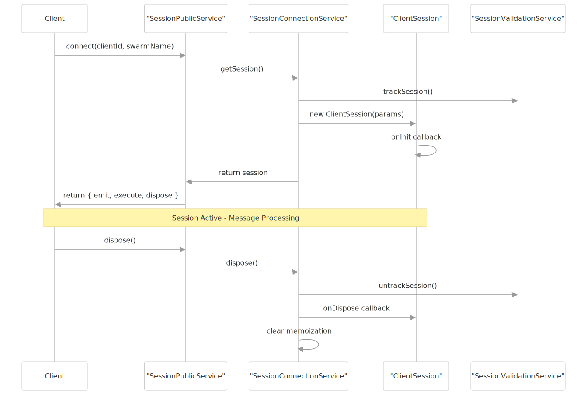
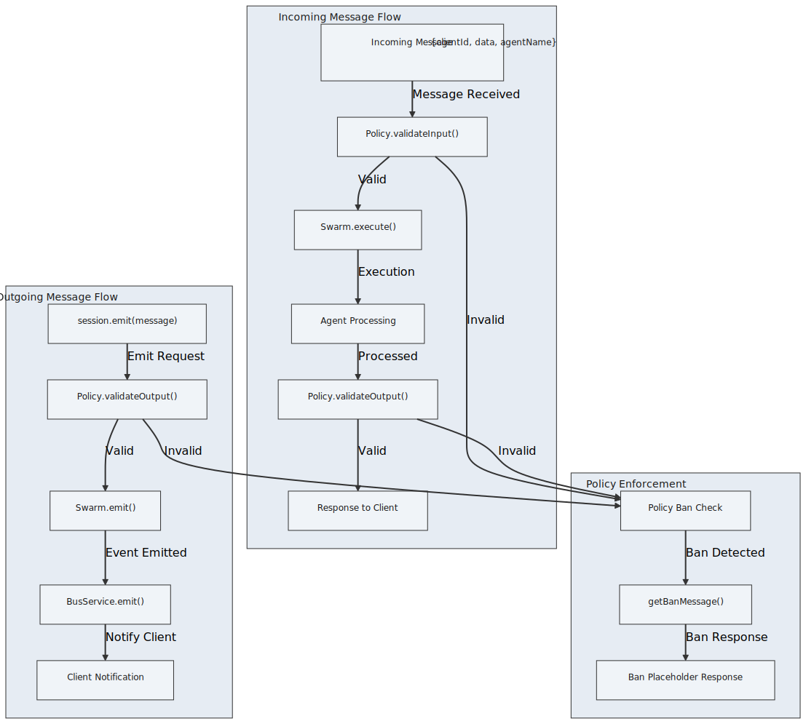

Schema Services provide centralized component definition and configuration management for the agent-swarm-kit framework. They serve as the foundational layer that defines how agents, tools, completions, storages, states, and other system components are configured, validated, and registered within the swarm ecosystem.
For information about how these schemas are used during runtime, see Connection Services. For details on the public APIs that consume these schemas, see Public Services.
The schema services form a critical layer in the dependency injection system, providing validated configuration storage for all swarm components. Each service follows a consistent pattern using ToolRegistry from functools-kit for efficient storage and retrieval.

All schema services implement a consistent pattern for component registration and retrieval. This pattern provides type safety, validation, and efficient storage using ToolRegistry.

Schema services support context-aware registry management through SchemaContextService. This allows for schema overrides during specific execution contexts, such as pipeline operations.
| Context State | Registry Source | Usage |
|---|---|---|
| No Context | Private _registry |
Normal operation |
| Schema Context Active | context.registry.{serviceName} |
Pipeline/execution overrides |
Manages IAgentSchemaInternal configurations defining agent behavior, dependencies, and resources.
Key Validation Rules:
agentName must be stringcompletion required for non-operator agentsprompt required for non-operator agentssystem, dependsOn, states, storages, tools, mcp) must contain unique stringsIntegration Points:
Manages IAgentTool schemas defining tool execution logic and validation.
Key Validation Rules:
toolName must be stringcall must be functionvalidate must be function (if present)function must be object or functionDefault Integration:
CC_DEFAULT_AGENT_TOOL_VALIDATE fallback for validationManages ICompletionSchema configurations for AI model integrations.
Key Validation Rules:
completionName must be stringgetCompletion must be functionflags must be array of strings (if present)Manages ISwarmSchema configurations for agent orchestration.
Key Validation Rules:
swarmName must be stringdefaultAgent must be stringagentList must be array of unique stringspolicies must be array of unique strings (if present)Manages IStateSchema configurations for state management.
Key Validation Rules:
stateName must be stringgetDefaultState must be functionmiddlewares must be array of functions (if present)Manages IStorageSchema configurations for data persistence and retrieval.
Key Validation Rules:
storageName must be stringcreateIndex must be functionembedding must be string (EmbeddingName reference)Manages IEmbeddingSchema configurations for vector similarity operations.
Key Validation Rules:
embeddingName must be stringcalculateSimilarity must be functioncreateEmbedding must be functionThe schema context system enables runtime schema overrides, particularly useful for pipeline operations where temporary schema modifications are needed.

Schema services are registered in the DI container and consumed by connection services, validation services, and public APIs.

All schema services integrate with LoggerService for operations logging, controlled by GLOBAL_CONFIG.CC_LOGGER_ENABLE_INFO. This provides consistent debugging capabilities across the schema layer.
Logged Operations:
validateShallow)register)override)get)